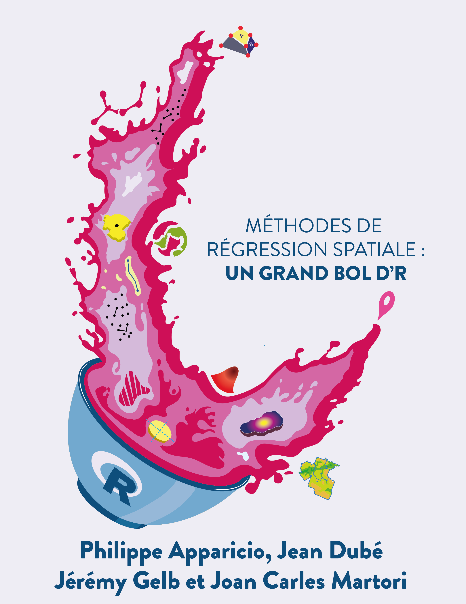
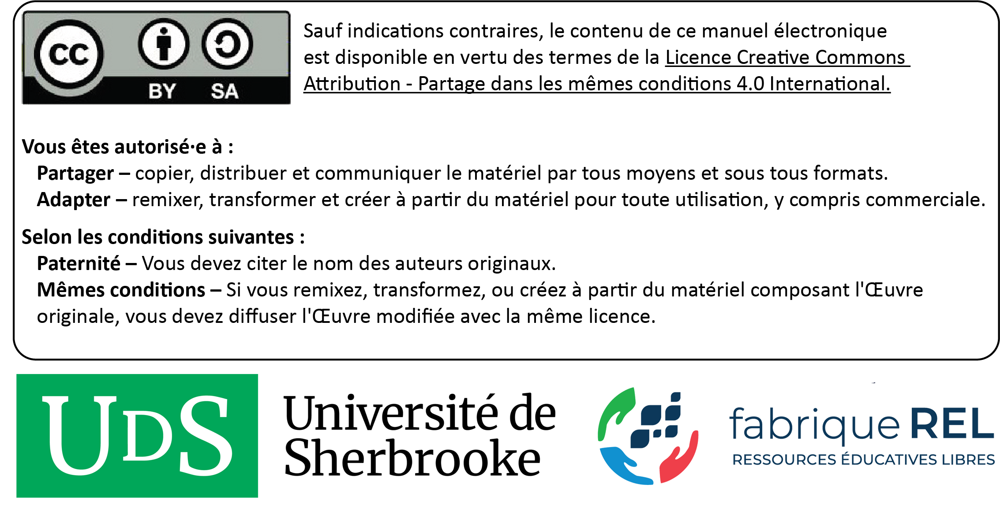
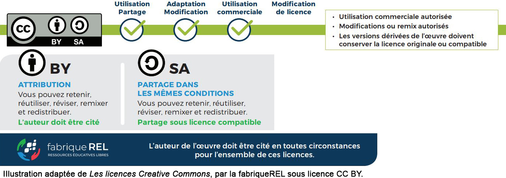
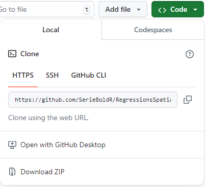

# Liste des packages
ListePackages <- c("dplyr", "mgwrsar", "plm", "RColorBrewer", "rgeoda", "sf", "spatialreg",
"spfilteR", "splm", "spdep", "spgwr")
# Packages non installés dans la liste
PackagesNonInstalles <- ListePackages[!(ListePackages %in% installed.packages()[,"Package"])]
# Installation des packages manquants
if(length(new.packages)) install.packages(PackagesNonInstalles)Régressions spatiales : un grand bol d’R

Résumé : Ce livre vise à décrire une panoplie de méthodes de régression spatiale avec le logiciel ouvert R. La philosophie de ce livre est de donner toutes les clefs de compréhension et de mise en œuvre des méthodes abordées dans R. La présentation des méthodes est basée sur une approche compréhensive et intuitive plutôt que mathématique, sans pour autant négliger la rigueur statistique.
Remerciements : Ce manuel a été réalisé avec le soutien de la fabriqueREL. Fondée en 2019, la fabriqueREL est portée par divers établissements d’enseignement supérieur du Québec et agit en collaboration avec les services de soutien pédagogique et les bibliothèques. Son but est de faire des ressources éducatives libres (REL) le matériel privilégié en enseignement supérieur au Québec.
Maquette de la page couverture et identité graphique du livre : Andrés Henao Florez.
Mise en page : Philippe Apparicio et Marie-Hélène Gadbois Del Carpio.
Révision linguistique : Denise Latreille.
© Philippe Apparicio et Jérémy Gelb.
Pour citer cet ouvrage : Apparicio P., J. Dubé, J. Gelb et J. C. Martori Cañas (2024). Régressions spatiales : un grand bol d’R. Université Laval et Université de Sherbrooke. fabriqueREL. Licence CC BY-SA.

Préface
Un manuel sous la forme d’une ressource éducative libre
Pourquoi un manuel sous licence libre?
Les logiciels libres sont aujourd’hui très répandus. Comparativement aux logiciels propriétaires, l’accès au code source permet à quiconque de l’utiliser, de le modifier, de le dupliquer et de le partager. Le logiciel R, dans lequel sont mises en œuvre les méthodes de régression spatiale décrites dans ce livre, est d’ailleurs à la fois un langage de programmation et un logiciel libre (sous la licence publique générale GNU GPL2). Par analogie aux logiciels libres, il existe aussi des ressources éducatives libres (REL) « dont la licence accorde les permissions désignées par les 5R (Retenir — Réutiliser — Réviser — Remixer — Redistribuer) et donc permet nécessairement la modification » (fabriqueREL). La licence de ce livre, CC BY-SA (figure 1), permet donc de :
Retenir, c’est-à-dire télécharger et imprimer gratuitement le livre. Notez qu’il aurait été plutôt surprenant d’écrire un livre payant sur un logiciel libre et donc gratuit. Aussi, nous aurions été très embarrassés que des personnes étudiantes avec des ressources financières limitées doivent payer pour avoir accès au livre, sans pour autant savoir préalablement si le contenu est réellement adapté à leurs besoins.
Réutiliser, c’est-à-dire utiliser la totalité ou une section du livre sans limitation et sans compensation financière. Cela permet ainsi à d’autres personnes enseignantes de l’utiliser dans le cadre d’activités pédagogiques.
Réviser, c’est-à-dire modifier, adapter et traduire le contenu en fonction d’un besoin pédagogique précis puisqu’aucun manuel n’est parfait, tant s’en faut! Le livre a d’ailleurs été écrit intégralement dans R avec Quatro. Quiconque peut ainsi télécharger gratuitement le code source du livre sur github et le modifier à sa guise (voir l’encadré intitulé Suggestions d’adaptation du manuel).
Remixer, c’est-à-dire « combiner la ressource avec d’autres ressources dont la licence le permet aussi pour créer une nouvelle ressource intégrée » (fabriqueREL).
Redistribuer, c’est-à-dire distribuer, en totalité ou en partie le manuel ou une version révisée sur d’autres canaux que le site Web du livre (par exemple, sur le site Moodle de votre université ou en faire une version imprimée).
La licence de ce livre, CC BY-SA (figure 1), oblige donc à :
Attribuer la paternité de l’auteur dans vos versions dérivées, ainsi qu’une mention concernant les grandes modifications apportées, en utilisant la formulation suivante : Apparicio Philippe et Jérémy Gelb (2024). Méthodes d’analyses spatiales : un grand bol d’R. Université de Sherbrooke. fabriqueREL. Licence CC BY-SA.
Utiliser la même licence ou une licence similaire à toutes versions dérivées.

Suggestions d’adaptation du manuel
Pour chaque méthode d’analyse spatiale abordée dans le livre, une description détaillée et une mise en œuvre dans R sont disponibles. Par conséquent, plusieurs adaptations du manuel sont possibles :
Conserver uniquement les chapitres sur les méthodes ciblées dans votre cours.
En faire une version imprimée et la distribuer aux personnes étudiantes.
Modifier la description d’une ou de plusieurs méthodes en effectuant les mises à jour directement dans les chapitres.
Insérer ses propres jeux de données dans les sections intitulées Mise en œuvre dans R.
Modifier les tableaux et figures.
Ajouter une série d’exercices.
Modifier les quiz de révision.
Rédiger un nouveau chapitre.
Modifier des syntaxes R. Plusieurs packages R peuvent être utilisés pour mettre en œuvre telle ou telle méthode. Ces derniers évoluent aussi très vite et de nouveaux packages sont proposés fréquemment! Par conséquent, il peut être judicieux de modifier une syntaxe R du livre en fonction de ses habitudes de programmation dans R (utilisation d’autres packages que ceux utilisés dans le manuel par exemple) ou de bien mettre à jour une syntaxe à la suite de la parution d’un nouveau package plus performant ou intéressant.
Toute autre adaptation qui permet de répondre au mieux à un besoin pédagogique.
Comment lire ce manuel?
Le livre comprend plusieurs types de blocs de texte qui en facilitent la lecture.
Bloc packages
Habituellement localisé au début d’un chapitre, il comprend la liste des packages R utilisés pour un chapitre.
Bloc objectif
Il comprend une description des objectifs d’un chapitre ou d’une section.
Bloc notes
Il comprend une information secondaire sur une notion, une idée abordée dans une section.
Bloc pour aller plus loin
Il comprend des références ou des extensions d’une méthode abordée dans une section.
Bloc astuce
Il décrit un élément qui vous facilitera la vie : une propriété statistique, un package, une fonction, une syntaxe R.
Bloc attention
Il comprend une notion ou un élément important à bien maîtriser.
Bloc exercice
Il comprend un court exercice de révision à la fin de chaque chapitre.
Comment utiliser les données du livre pour reproduire les exemples?
Ce livre comprend des exemples détaillés et appliqués dans R pour chacune des méthodes abordées. Ces exemples se basent sur des jeux de données structurés et mis à disposition avec le livre. Ils sont disponibles sur le repo github dans le sous-dossier data, à l’adresse https://github.com/SerieBoldR/RegressionsSpatiales/tree/main/data.
Une autre option est de télécharger le repo complet du livre directement sur github (https://github.com/SerieBoldR/RegressionsSpatiales) en cliquant sur le bouton Code, puis le bouton Download ZIP (figure 2). Les données se trouvent alors dans le sous-dossier nommé data.

Liste des packages utilisés
Dans ce livre, nous utilisons de nombreux packages R que vous pouvez installer avec le code ci-dessous.
Structure du livre
Le livre est organisé autour de cinq grandes parties.
Partie 1. Notions de base. Dans cette première partie, nous présentons les jeux de données utilisées pour mettre en œuvre les différentes méthodes de régression spatiale présentées dans le livre (chapitre 1). Nous discutons aussi de plusieurs notions fondamentales et méthodes qu’il importe de bien maîtriser avant d’aborder les chapitres suivants consacrés aux méthodes de régression spatiale, notamment : l’autocorrélation spatiale (globale et locale), la notion de variable spatialement décalée et la régression linéaire multiple. Nous conclurons ce chapitre en exposant les raisons qui justifient l’utilisation de différentes formes de régressions spatiales pour modéliser des données spatiales ou spatiotemporelles.
Partie 2. Modèles d’économétrie spatiale. Cette seconde partie est consacrée aux modèles d’économétrie spatiale qui vise à modéliser la dépendance spatiale. Dans le chapitre 2, nous décrivons ainsi les principaux modèles spatiaux autorégressifs qui permettent d’introduire l’autocorrélation spatiale sur les variables indépendantes (modèle SLX), la variable dépendante (SAR), sur le terme d’erreur (SEM), à la fois sur la variable dépendante et les variables indépendantes (SDM) ou à la fois sur le sur les variables indépendantes et sur le terme d’erreur (SDEM). Dans le chapitre 3, nous abordons une extension des modèles autorégressifs, soit les modèles spatiaux par panel qui permettent de modéliser des données spatiales longitudinales.
Partie 3. Régressions géographiquement pondérées. Dans cette partie, nous abordons les régressions géographiquement pondérées (GWR) qui permettent de modéliser l’hétérogénéité spatiale, soit l’instabilité des relations entre la variable dépendante et celles indépendantes. Premièrement, nous décrirons les formes dites classiques de la GWR qui s’appliquent à des variables dépendantes continues, dichotomiques (logistique) et de comptage (Poisson) (?sec-chap04). Deuxièmement, nous abordons des extensions des la GWR, particulièrement la GWR mixte, la GWR multiéchelle, la régression temporellement et géographiquement pondérée (GTWR) et les GWR mixtes avec des variables spatialement décalées (MGWR-SAR) (chapitre 4).
Partie 4. Autres approches de modélisation spatiale. Dans cette dernière partie, nous abordons
L’autocorrélation spatiale est une notion fondamentale en analyse spatiale permettant de vérifier si les entités proches ou voisines ont tendance à être (dis)semblables en fonction d’un phénomène donné. Dans le chapitre 2, nous décrivons une panoplie de méthodes permettant de définir des matrices de pondération spatiale qui sont utilisées pour évaluer la dépendance spatiale d’une ou de plusieurs variables, soit les mesures d’autocorrélation spatiale globale et locale. La compréhension de la notion de dépendance spatiale et des différentes mesures d’autocorrélation spatiale est primordiale puisqu’elles sont largement mobilisées dans d’autres méthodes d’analyses spatiales décrites dans les chapitres suivants, notamment les régressions spatiales (chapitre 2) et les méthodes de classification spatiale (chapitre 3).
Partie 4. Autres modèles de régressions spatiales. Cette cinquième et dernière partie comprend deux chapitres. Le chapitre 6 est consacré à plusieurs méthodes de régression intégrant l’espace : modèles d’économétrie spatiale, modèles généralisés additifs (GAM) avec une spline bivariée sur les coordonnées géographiques, régressions géographiquement pondérées. Dans le ?sec-chap08, nous décrivons des méthodes permettant de regrouper des entités spatiales d’une région en plusieurs classes en fonction de leurs caractéristiques évaluées à partir de plusieurs variables. Nous distinguons deux types de méthodes de classification non supervisée spatiale : les méthodes de classification non supervisée avec contrainte spatiale visant à regrouper des entités spatiales en plusieurs régions avec une absence de mitage (algorithmes AZP, SKATER, REDCAP, etc.); les méthodes de classification non supervisée avec une dimension spatiale (méthode ClustGeo et classification floue c-moyennes spatiale).
Remerciements
De nombreuses personnes ont contribué à l’élaboration de ce manuel.
Ce projet a bénéficié du soutien pédagogique et financier de la fabriqueREL (ressources éducatives libres). Les différentes rencontres avec le comité de suivi nous ont permis de comprendre l’univers des ressources éducatives libres (REL) et notamment leurs fameux 5R (Retenir — Réutiliser — Réviser — Remixer — Redistribuer), de mieux définir le besoin pédagogique visé par ce manuel, d’identifier des ressources pédagogiques et des outils pertinents pour son élaboration. Ainsi, nous remercions chaleureusement les membres de la fabriqueREL pour leur soutien inconditionnel :
Myriam Beaudet, bibliothécaire à l’Université de Sherbrooke.
Marianne Dubé, coordonnatrice de la fabriqueREL, Université de Sherbrooke.
Serge Piché, conseiller pédagogique, Université de Sherbrooke.
Claude Potvin, conseiller en formation, Service de soutien à l’enseignement, Université Laval.
Nous remercions chaleureusement les personnes étudiantes du cours GMQ405 - Modélisation et analyse spatiale du Baccalauréat en géomatique appliquée à l’environnement et du Microprogramme de 1er cycle en géomatique appliquée du Département de géomatique appliquée de l’Université de Sherbrooke de la session d’été 2023 : Hermann B. Beaudin, Jérémie Durand, Marie-Hélène Gadbois Del Carpio, David Lapointe, Marc-Antoine Lecours-Toutloff, Rosemarie Légaré, Frédéric Malo, Anthony Mandeville, Gurwen Meret, Sarah Pion, Anne-Sophie Roy, William Scrive, Aldin Evrad Tampe et Kévin Therrien. Vos suggestions et commentaires nous ont permis d’améliorer grandement la version préliminaire de ce manuel qui a été utilisée dans le cadre de ce cours.
Nous remercions aussi les membres du comité de révision pour leurs commentaires et suggestions très constructifs. Ce comité est composé de quatre personnes étudiantes du Département de géomatique appliquée de l’Université de Sherbrooke :
Gaël Machemin et Loek Pascaud, étudiants à la maîtrise en géomatique appliquée et télédétection (type recherche).
Rosemarie Légaré, étudiante au baccalauréat en géomatique appliquée à l’environnement.
Marie-Hélène Gadbois Del Carpio, étudiante de troisième année au baccalauréat en géomatique appliquée à l’environnement a participé activement à la mise en page du manuel; elle est désormais une grande spécialiste des feuilles de style en cascade (CSS) et de Quarto.
Aussi, les discussions enrichissantes avec Geneviève Crevier et Amélie Fréchette ont largement contribué à définir et à bonifier la table des matières.
Finalement, nous remercions Denise Latreille, réviseure linguistique et chargée de cours à l’Université Sherbrooke, pour la révision du manuel.